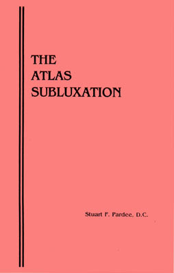

—Stuart F. Pardee, D.C.
INTRODUCTION
This booklet describes a condition that, in the author's opinion, exists in many, many people, and which can cause a myriad of seemingly unrelated problems, some of them quite severe, that canlast for years and years as long as it remains untreated.
This condition usually results from a person taking a blow to the head, or jarring their head or neck, doing something so seemingly minor as stepping off a curb they did not know was there, or something more severe such as being involved in an automobile accident. Occasionally it results from having their head and neck in an odd position for an extended period of time, such as painting a ceiling, or sleeping wrong.
This condition adversely affects the functioning of the central nervous system. Because of this, it can cause any number of problems, some of them minor, some quite severe.
My experience has shown me that this condition is quite common, yet typically goes undiagnosed and untreated. Many of those who have it desperately need it treated, and once it is corrected often times have dramatic relief from their problems, even after suffering for years and having been treated by many different doctors of different disciplines.
Stuart F. Pardee D.C.
Chiropractor
Minden, Nevada
THE MAIN PREMISE
Central to the concepts described in this booklet is the premise that a healthy body depends upon a healthy nervous system. A healthy nervous system requires that the brain, brainstem, and spinal cord function properly, and that there be a clear, unaltered transmission of nerve impulses between the brain and body through the nervous system.
The condition described in this booklet adversely affects the functioning of the central nervous system. It can do it only slightly, or very severely. Correcting it reverses the process, allowing the nervous system to function normally again. It is that simple.
THE ATLAS SUBLUXATION
The ATLAS is the top vertebra in the neck, also called Cl. The OCCIPUT is the bone which forms the base of the skull. At the bottom of the skull in the occiput is the FORAMEN MAGNUM, a hole where the spinal cord passes through as it leaves the skull. The spinal cord then passes through the atlas, then down through the rest of the vertebrae in the spine. At this level where the spinal cord exits the skull, there are approximately eight billion nerve fibers within it.
The atlas is unique to all the vertebrae in the spine because it is not held in place by a disc. It is held in place only by muscles, ligaments, and a joint capsule, and thus is the most freely moveable vertebra in the spine. The entire weight of the head, usually about 12 pounds in an adult, rests on the atlas. This joint where the head rests on the atlas is called the atlas-occiput joint (or more commonly called the atlanto-occipital joint). If you examine this joint, you will find that it is shaped such that the head sits on the atlas very similar to the way a golf ball sits on a golf tee. It is this unusual joint arrangement, situated at a very critical level of the central nervous system that makes this area so susceptible to injury through a blow or a jar to the head.
A blow or jar to the head or neck can injure the atlas-occiput joint. The net result of this is that the joint loses its normal freedom of movement and function, and may - or may not - become misaligned. When this happens, a mechanical stress is put on the brainstem and spinal cord at this level, creating an irritation to the central nervous system, and affecting in varying degrees the function of the brain, the brainstem, and the spinal cord, and the transmission of nerve impulses between the brain and the body. The bottom line is that the central nervous system no longer functions properly, resulting in a less than healthy body, and for many people, pain and misery that lasts as long as this problem exists. This condition is known as an ATLAS SUBLUXATION.
MOST IMPORTANTLY, by correcting the atlas subluxation, a mechanical stress is removed from the brainstem and spinal cord, thus removing an irritation to the central nervous system and allowing the brain, brainstem, and spinal cord to function properly again, and allowing an unaltered transmission of nerve impulses between the brain and body.
THE AXIS SUBLUXATION
The AXIS is the second from the top vertebra in the neck, also called C2. The atlas sits on top of the axis. The joint where the atlas and axis join can also be traumatized, causing the axis to lose its normal freedom of movement and function, and may - or may not - become misaligned. This can happen in conjunction with the atlas subluxation, or independent of it. This is usually called an AXIS SUBLUXATION. The axis subluxation in itself can cause problems, but when it happens at the same time as the atlas subluxation, the two can cause devastating consequences for the individual. I've seen people almost suicidal from this combination.
THE KEY
The key to understanding how the atlas or axis subluxation can have such devastating effects on the health and well being of an individual is to understand that the atlas or axis subluxation adversely affects the functioning of the CENTRAL nervous system, which, of course, ultimately controls the functioning of the entire body. The remainder of this booklet elaborates on many of the more common symptoms I have seen resulting from an atlas or axis subluxation. As you read on, keep in mind that these problems are due to a compromise to the function of the CENTRAL nervous system.
SYMPTOMS
I have been treating atlas/axis subluxations since 1987 with my treatment methods that were designed specifically to treat this problem. The following are my observations of the most common symptoms atlas/axis subluxations can cause:
In babies and children, please note, I do not consider myself a replacement for your pediatrician. I am not trained in pediatrics. However, I am very good at identifying and treating atlas/axis subluxations, even in babies and children, and yes; they do occur in them and can cause devastating consequences. These are the common symptoms an atlas subluxation causes in babies or children:
If your child has a sudden change in personality that causes a nice, calm child to become a monster, they should be checked for an atlas subluxation. I've seen some dramatic changes in children's behavior and personality after having their atlas adjusted.
The following pages elaborate on the many symptoms caused by an atlas/axis subluxation. NOTE: Unless otherwise noted, for the remainder of this booklet I will refer to the atlas or axis subluxation simply as the atlas subluxation, remembering that the problem may be either atlas or axis, or a combination of the two.
HEADACHES
Perhaps the most common complaints I see due to the atlas subluxation are headaches. There are manydifferent types of headaches with many different causes. The headaches that the atlas subluxation causegenerally follow this pattern:
(1) The headaches usually originate from the base of the skull (called the sub-occipital region), often times on one side, and radiate up the back of the head into the temples and eyes. The patient will often describe the pain as a "pressure" at the base of the skull.
(2) The headaches are often accompanied by neck pain and stiffness, and radiating pain toward one or both shoulders.
(3) The headaches are also often accompanied by blurring or fuzziness of the vision. (This is particularly common after a "whiplash" injury).
In the medical literature, these headaches are classified as "cervicogenic" or "vertebrogenic", meaning originating from the neck. They are often times diagnosed as "tension" headaches.
The following case is one of the most satisfying of the many, many headache cases I have treated, because in my opinion one atlas adjustment saved this little girl a lifetime of misery.
This seven year old girl was brought to me suffering from severe headaches and blurred vision. At age five she had fallen off of monkey bars and hit her head. Her headaches were so severe she was taken out of school and was being privately tutored at home. Most of the day she wanted to lay on the couch with a cold towel on her head. Her vision had become so blurred she had difficulty seeing the TV clearly. The day after I adjusted her atlas the headaches quit and her vision cleared up. I saw this girl in my office seven years later for another injury, and her parents told me that she had been able to lead a normal life after I treated her.
NECK PAIN
It doesn't take a genius to figure out that the atlas/axis subluxation can cause neck pain. Symptoms are often times similar to what I described above. Pain and pressure at the top of the neck, sometimes one side, sometimes both sides. However, there are two other very distinct types of neck pain worth mentioning. The ATLAS subluxation will cause a frozen neck. The individual will not be able to move their neck in any direction. Usually their neck will be very painful and will be flexed forward slightly. The pain will usually be concentrated toward the bottom of the neck right in the middle. In contrast to this, an AXIS (C2) subluxation will cause an inability to rotate their neck in one direction. They can easily rotate their neck the other way. The pain will be on one side of the neck. Typically the person just wakes up with it - there usually is no trauma associated with it. This is one of the most common complaints I see in my office, and is very easy to treat.
VISION PROBLEMS
The nerves which control the muscles that move the eyeball and the muscles that focus the lens originate from the brainstem, and can be affected by an atlas subluxation. One of the very common complaints that people who have been in auto accidents relate to me is blurred vision. They say they can see OK, but their vision is "fuzzy", and they are always blinking their eyes to focus. This problem almost always clears up after the atlas adjustment.
In an unusual case that was not accident related, a woman's left eye was pegged inward (like her eyes were crossed, but only on one side). Three eye specialists told her it was a permanent condition. About a week after the atlas adjustment she woke up and her eye had returned to normal.
FACIAL PAIN AND JAW PAIN
The trigeminal nerve controls sensation to much of the face, and also controls the muscles of mastication (the chewing muscles). This nerve originates from the brainstem, and has fibers that drop down into the neck to the level of the axis. Subluxations of the atlas or axis can directly affect this nerve, resulting in facial pain and jaw problems.
DIZZINESS
Over the years I have successfully treated many cases of dizziness. My experience has shown that theAXIS subluxation usually is the cause rather than the atlas.
PAIN AND SWELLING AT THE BOTTOM OF THE NECK
At the very bottom of the neck in the middle, about even with the top of the shoulders, there is a very prominent bone that sticks out backwards from the spine. This is the spinous process of the C7 or T1 vertebra. Over the years I have had many people tell me that this particular area had been swollen for a long time - sometimes for years - until I adjusted their atlas. As a result of this, I began to pay attention to this area. I've noticed that the ATLAS subluxation will create pain right in this area. The pain will be centralized in the spine right about T1, and will sometimes go down as far as the area between the shoulder blades. Often there is swelling. Their neck will feel very stiff, and they will tend to carry their head and neck bent forward due to the pain. Correcting the atlas subluxation seldom fails to correct this problem.
PAIN, NUMBNESS, TINGLING, OR WEAKNESS IN THE
ARMS, HANDS, LEGS, OR FEET
The atlas subluxation should always be considered a cause in cases of pain, numbness, tingling, or weakness of the extremities. The following cases illustrate this point.
(1) A 30 year old man came to me complaining of weakness in his left arm and hand. Grip strength testing showed 20 pounds in his left hand, 110 in his right. Within minutes after the atlas adjustment he stated "I can feel the strength coming back into my hand." Grip strength test 15 minutes after the atlas adjustment showed 60 pounds in the left hand. Two days later it measured 110 pounds.
(2) A 27 year old woman fell 2 days prior and her right leg went numb from the hip down. She could not move her toes, ankle or knee. She had no feeling whatsoever in her leg. The feeling started coming back into the leg within minutes after the atlas adjustment. It was totally back the next day
LOW BACK PAIN
I could fill this entire booklet with case histories of people who have gotten relief from their low back pain after the atlas adjustment. One of the things that influenced me to pursue this work years ago was the number of people who told me of the dramatic relief they had gotten from their low back pain after having their atlas adjusted.
There are many, many causes of low back pain. The atlas subluxation is but one, but if it is the cause, almost no one will diagnose and treat it, so the low back pain will continue.
My observations on the types of low back pain that respond to the atlas adjustment are:
(1) Generally, the person does not recall any specific injury or incident that brought on the low back pain. Often times they will tell me they had been doing some lifting, but will insist they did not injure their back.
(2) The low back pain is usually a general pain spread out across the low back rather than a verylocalized pain.
(3) The person often describes the pain as a feeling of "tightness" or "pressure" in the back. It is often very intense and unrelenting.
(4) If the person complains of pain, weakness, or numbness in their legs, it usually is in both legs, although it may travel from leg to leg.
The atlas subluxation is one of many, many causes of low back pain, but it most definitely is a cause, and should always be considered.
BACK SPASMS
There are many different types and causes of back spasms. The atlas subluxation causes a very distinct type of back spasm. The person will describe the spasms as hitting them in waves, and are usually unprovoked. They can happen just laying in bed. Sometimes they are triggered by the slightest movement. They are verypainful. I have seen some very dramatic relief from this type of back spasms after the atlas subluxation was corrected. The next time you hear of a football player being out of action because of back spasms, you can bet they need their neck, in addition to their back, treated.
THE INABILITY TO THINK STRAIGHT
This is my very, very favorite thing to treat. Most cases I have seen of this resulted from automobile accidents. People will come to me in a panic. They will usually tell me they can deal with the pain, but the inability to think straight is driving them crazy. On many occasions I have cleared up their thinking within seconds after the atlas adjustment. I love treating this particular problem because I have always been a student of the power of the human mind, and know that losing your ability to think straight really screws up your life. The thrill of restoring someone's sharp mind is indescribable.
LOSS OF A SENSE OF WELL-BEING
How do you measure a person's sense of well-being? I have found it very fascinating that many, many times, on follow up visits after I correct the atlas subluxation, the first thing people will tell me is that their sense of well-being is better. They can't put a finger on it - they just feel better. If in fact the atlas subluxationadversely effects the functioning of the central nervous system, it makes sense that correcting it would improve the sense of well-being.
THE GREAT MIMICKER
As you can see by reading this booklet, the atlas subluxation can cause many, many problems. Yet every condition and symptom that I have written about in this booklet has many, many other causes. There are many, many causes of headaches; there are many, many causes of back pain, etc. I call the atlas subluxation the great mimicker, because the conditions and symptoms it can cause mimic so many things. As an example, I've corrected two cases of chronic testicle pain, at least a half dozen cases of chronic ankle pain, my own rather acutely painful knee, one case of hemorrhoids. Who would think to look to the atlas as a cause of these problems? Thus I believe that for the conditions described in this booklet, the atlas subluxation should be considered as a possible cause in addition to all other possible causes.
FROM MY FILES
The following are actual case histories that illustrate the many ways people have injured themselves resulting in an atlas subluxation.
Also, it is well accepted in the chiropractic profession that a traumatic birth - especially a forceps birth - can cause an atlas subluxation.
TREATMENT
I go through a series of tests to determine if the atlas or axis subluxation exists. I then x-ray the area from four different angles.
The correction (known as an "adjustment") is made using either an instrument or my hands, depending upon if the primary problem is the atlas or the axis. The instrument I use was researched, engineered, and constructed solely for the purpose of delivering a specific force to the atlas which can be precisely controlled.
I ask every patient who is being adjusted for the first time to plan a minimum of activities for the remainder of the day, and to plan on getting a good night's sleep that night. I never allow any patient to return to work the day of the first atlas adjustment. For those people who come from out of town to be treated, I ask that they find local accommodations to stay overnight prior to leaving this area.
THE AMOUNT AND LENGTH OF TIME OF TREATMENT
Two factors determine how much treatment is necessary: (1) the severity of the original trauma that caused the atlas/axis subluxation, and (2) the length of time since it occurred. Examples: A person jolts their head lightly and develops mild neck pain and a pressure headache at the base of the skull. They come in to be treated the next day. This person will most probably require one adjustment and will recover within a day or two. In another case, a person severely injures the atlanto-occipital joints in an automobile accident 20 or 30 years ago, and has suffered ever since then. (Believe me, I've seen lots of these.) This person will require many adjustments over a long course of time - meaning years.
These are the two extremes. Most people fall somewhere in between. I would say I adjust the atlas or axis of the average patient about 2 to 5 times before they return to normal. One of the guiding principles of this work is once the correction is made and the function of the joint returns to normal, leave it alone and let the body heal. As my dad used to tell me when I was learning to work on cars: if it works, don't fix it. The body is no different.
AUTOBIOGRAPHY
A native of Detroit, Michigan, I was an honor student in high school and named the outstanding student-athlete of my graduating class. I graduated from the United States Air Force Academy in 1968 and spent the next 8 years as an Air Force pilot, flying 370 combat missions in the Viet Nam war. I graduated from Life Chiropractic College-West in 1983, and shortly thereafter opened a private practice in Gardnerville, Nevada. My wife Veronica and I have two daughters. I began doing the work described in this booklet in 1987.
OUR OFFICE
Our office is now located at 1698 County Road, Minden, Nevada, about an hour south of Reno, and a half hour due east of South Lake Tahoe. Our telephone number is (775) 782-5143. Our FAX number is (775) 782-2305.
THE HISTORY OF THIS METHOD
Chiropractic was founded in 1895 by Daniel David Palmer. He established the Palmer School of Chiropractic in Davenport, Iowa. The school grew rapidly, but was destined for failure due to Palmer's poor business practices. Eventually his son, Bartlett Joshua ("BJ") Palmer took over the school, and over the next 60 years was its President, built it into the largest chiropractic college in the world, and is generally regarded as being the person who brought chiropractic into prominence in the world. BJ developed many of the treatment methods employed by early chiropractors. During the 1920's, he began centering his research efforts at the top of the neck at the level of the atlas and axis. In the early 1930's he abandoned most all adjusting techniques in favor of atlas/axis adjusting. He was convinced that the atlas and axis were the only vertebrae in the spine you had to adjust. This technique he named H-I-O ("hole-in-one"), and became known as the "Palmer Method". The adjustment was done by hand, and thousands of chiropractors were trained in its use.
In 1931 a young man named Arden Zimmerman graduated from Stanford University. He had been a very sickly person ever since he was hit in the back of the head by a swing when he was 8 years old. He was bedridden for the 5 years following college, and was diagnosed as being terminally ill. In 1936 he was wheeled on a stretcher into the Palmer Clinic in Iowa weighing less than 100 pounds. BJ adjusted his atlas, and with time and treatment he recovered. Eventually he returned to the Palmer School as a student, and after graduating returned to California to practice. In the 1940's he researched and developed an instrument to do the adjustment that until then had always been done by hand. Dr. Zimmerman died at 90 years of age, having treated over 100,000 people with his instrument.
The instrument I use is the same instrument Dr. Zimmerman used for 50 years. It has been proven very safe and effective in treating the atlas subluxation.
Thus, I am not doing anything new under the sun. I am using a time proven technique - The Palmer Method - but I am doing it with an instrument that has withstood the test of time. The results I have seen since 1987 verify to me why the Palmer Method and this instrument has been so successful over the years.
Reproduced here with the permission of Dr Pardee.